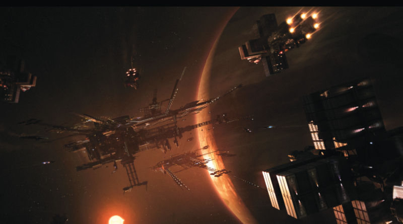
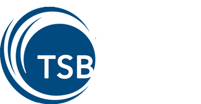
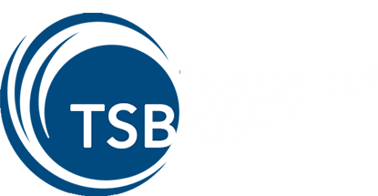

SYSTEM: HADRIAN

Die Befestigungen begannen in der Nähe bekannter Sprungpunkte errichtet zu werden und es wurden zusätzliche Ressourcen in die Entdeckung möglicher unbekannter Verbindungen mit anderen Xi’an Systemen investiert. Obwohl noch keine direkte Verbindung zum Xi’an Raum gefunden wurde, wurde Hadrian mit anderen Grenzsystemen wie Oya, Castra und Kiel verbunden, was seine strategische Bedeutung erhöhte. Darüber hinaus erhielt Hadrian einen riesigen Zustrom an Geldmitteln, als ein direkter Sprungpunkt nach Terra entdeckt wurde. Um dieses schnell wachsende System zu schützen, entschied das Militär, dass es noch drastischere Abwehrmaßnahmen und erhebliche Anstrengungen zur Schaffung eines riesigen Minenfeldes im gesamten System als zusätzliche Abschreckung erforderlich seien.Für die nächsten zweihundert-fünfzig Jahre sollte das Hadrian-System ein Labyrinth aus Minen und befestigten Vorposten mit strotzenden Schnellstart -Abwehrsystemen bleiben, die alle auf einen Xi’an Angriff vorbereitet waren, der niemals kommen würde. Im Jahre 2793 wurde das Perry Line Abkommen unterzeichnet und mit dem Ende des kalten Krieges das Hadrian System schnell entmilitarisiert und Zivilpersonen wurde wieder der Zugang zum System ermöglicht. Trotzdem war der ursprüngliche Bergbau-Boom, der zunächst das Interesse an Hadrian geweckt hatte, keine Option mehr für die wirtschaftliche Entwicklung. Als das Militär seine Streitkräfte zurückzog und damit große Minenfelder entfernt wurden, wurden andere Gebiete, wie z. B. der Asteroidengürtel, als zu gefährlich eingestuft und stattdessen mit Warnsignalen markiert.
Obwohl die ursprüngliche Industrie aufgrund der Nähe Hadrian’s zum Xi’an Raum ein Ende fand, würde es genau deswegen einen Neuanfang erhalten.

“Ich fordere sie auf zu kommen.” – Dem Marine Admiral Les Holstein zugeschrieben, in angeblicher Reaktion auf einen Senator, der fragte, ob die Truppen Hadrians auf einen Einfall der Xi’ an vorbereitet waren, 27. Jahrhundert.
Excurs - System: Hadrian
Ein steiniger Beginn
Kein System erinnert stärker daran, wie sehr sich das Imperium seit dem Fall des Messer-Regimes verändert hat als das Hadrian-System. Einst allgemein als “Niemandsland” für seine Rolle im kalten Krieg bezeichnet, ist er heute zu einer Bastion des Handels zwischen dem Imperium und unseren Xi’an Nachbarn geworden. Durch den roten Riesen festgehalten, wurde das Drei-Planeten-System erstmals 2510 durch seine Verbindung mit dem Pyro System entdeckt. Obwohl der Sprungpunkt von einer Scan-Crew, angestellt bei Pyrotechnic Amalgamated, entdeckt wurde, entschied sich das Unternehmen, das durch seine jüngsten Investitionen in Pyro bereits finanziell ausgedünnt war, auf jegliche Ansprüche an das nahezu unbewohnbare Sonnensystem zu verzichten, im Austausch für den Geldzufluss, den der Verkauf der Entdeckung des Systems mit sich bringen würde. Auch die UNE, deren Hauptaugenmerk auf der Suche nach Welten für das Terraforming und die folgende Ansiedlung lag, zeigte wenig Interesse an einer aktiven Rolle im neuen System. Die erste Welle von Bewohnern würden vielmehr diejenigen sein, welche von den Ressourcen angezogen werden, die darauf warten aus dem Asteroidengürtel gewonnen zu werden, der zwischen dem zweiten und dritten Planeten umkreist wird. Als die Bergbaubevölkerung langsam wuchs, wurden kleine Stationen gebaut, um ihren Bedürfnissen zu entsprechen und den neuen Zustrom von Hilfskräften, die ebenfalls kamen, zu beherbergen. Das Wachstum des Systems sollte jedoch von kurzer Dauer sein.Eine gefährliche Verbindung
Während die Entdeckung eines Sprungpunktes im Jahre 2539, welcher als Gurzil bekannt wurde, mehr wirtschaftliche Möglichkeiten eröffnete, führte die Ankunft eines Xi’an Scout Schiffes im Jahre 2542 das UPE-Militär dazu, beide Systeme von der zivilen Nutzung abzuschotten. Kurz darauf wurde die Perry-Linie formell geschaffen und das System begann seinen Übergang in eine militarisierte Zone. Man beachte, dass es ursprünglich das Nivelin-System genannt wurde, nach dem Gründer von Pyrotechnic Amalgamated, Tromo Nivelin. Die UPE benannte es in die militärische Bezeichnung Hadrian um, in Bezug auf die legendäre Verteidigungsmauer der antiken Erdkultur Roms. Dies war passend, da Militärstrategen zu dem Schluss kamen, dass wenn Gurzil die vorderste Front in einem Xi’an Krieg mit der Menschheit wäre, Hadrian zu einem Sperrsystem werden würde, um Xi’an Übergriffe daran zu hindern, weiter in den UPE-kontrollierten Raum einzudringen.Die Befestigungen begannen in der Nähe bekannter Sprungpunkte errichtet zu werden und es wurden zusätzliche Ressourcen in die Entdeckung möglicher unbekannter Verbindungen mit anderen Xi’an Systemen investiert. Obwohl noch keine direkte Verbindung zum Xi’an Raum gefunden wurde, wurde Hadrian mit anderen Grenzsystemen wie Oya, Castra und Kiel verbunden, was seine strategische Bedeutung erhöhte. Darüber hinaus erhielt Hadrian einen riesigen Zustrom an Geldmitteln, als ein direkter Sprungpunkt nach Terra entdeckt wurde. Um dieses schnell wachsende System zu schützen, entschied das Militär, dass es noch drastischere Abwehrmaßnahmen und erhebliche Anstrengungen zur Schaffung eines riesigen Minenfeldes im gesamten System als zusätzliche Abschreckung erforderlich seien.Für die nächsten zweihundert-fünfzig Jahre sollte das Hadrian-System ein Labyrinth aus Minen und befestigten Vorposten mit strotzenden Schnellstart -Abwehrsystemen bleiben, die alle auf einen Xi’an Angriff vorbereitet waren, der niemals kommen würde. Im Jahre 2793 wurde das Perry Line Abkommen unterzeichnet und mit dem Ende des kalten Krieges das Hadrian System schnell entmilitarisiert und Zivilpersonen wurde wieder der Zugang zum System ermöglicht. Trotzdem war der ursprüngliche Bergbau-Boom, der zunächst das Interesse an Hadrian geweckt hatte, keine Option mehr für die wirtschaftliche Entwicklung. Als das Militär seine Streitkräfte zurückzog und damit große Minenfelder entfernt wurden, wurden andere Gebiete, wie z. B. der Asteroidengürtel, als zu gefährlich eingestuft und stattdessen mit Warnsignalen markiert.
Obwohl die ursprüngliche Industrie aufgrund der Nähe Hadrian’s zum Xi’an Raum ein Ende fand, würde es genau deswegen einen Neuanfang erhalten.
Ein Neuanfang
Als sich das 29. Jahrhundert dem Ende zuneigte, sind die Beziehungen zu den Xi’an endlich genug aufgetaut, sodass der Handel zwischen den beiden Völkern zu blühen begann. Das Hadrian System wurde ein wichtiger Halt für Waren und Güter, die von Terra und dem Rest des Imperiums in den Xi’an Raum transportiert wurden. Es verfügte über eine gute Infrastruktur zum Tanken, Auffüllen und Reparieren, dank der in das System eingebauten militärischen Einrichtungen, und obwohl die Minen im gesamten System das Reisen erschwerten, machte es auch den Gesetzlosen zu schaffen Zugang zu erlangen, da die Schiffe sehr spezifische und gut bewachte Routen durch das System nehmen mussten. Diese freien Transportwege stellten auch für die UEE eine ideale Situation dar, Zollstationen einzurichten, um den Warenfluss der Xi’an zu steuern. Sie können Schiffe, die von der Grenze aus ankommen, leicht überwachen, da die meisten die anfallenden Einfuhrabgaben lieber zahlen als das Risiko auf nicht gekennzeichneten Routen zu fliegen. Mit dem Handel nahm auch die Zahl der Stationen zu, die den Transportunternehmen dienten, die Waren durch das System zu befördern. Die größte dieser Stationen, die Flottille bekannt als Kedsu Reef, hat sich in den letzten zehn Jahren zu einem der belebtesten Fremdenhandelsknotenpunkte des Imperiums entwickelt. Jetzt, da die vorgeschlagene Mensch-Xi’an Handelsinitiative vom Senat beschlossen wird und das wachsende industrialisierte Xi’an System von Rhilah nur einen Sprung vom benachbarten Gurzil entfernt ist, ist das Hadrian System bereit, noch mehr zu wachsen.Hadrian I & II
Die beiden inneren Planeten des Systems sind beide Gasriesen. Hadrian I hat einen felsigen Kern unter seiner stürmischen Atmosphäre, während die hellblaue Atmosphäre um Hadrian II im Vergleich dazu ruhig ist. Als das Militär anfing, den Zivilisten den Zugang zum System zu ermöglichen, stellte die Gassammlung und -raffination bei Hadrian II die Mehrheit der in Hadrian verdienten Einnahmen dar, bis die Handelsumsätze später im Jahrhundert die Einnahmen in den Schatten stellten.Kedsu Reef
Viele der ehemaligen Militärstationen entlang der Haupthandelsrouten wurden schnell gekauft und umgerüstet, um die Transporte über das System zu bedienen. Dennoch gab es an anderer Stelle in Hadrian noch zahlreiche Stationen, die größtenteils verlassen blieben, weil sie wenig Zulauf hatten oder sich in gefährlichen Sektoren befanden. Wo die meisten Menschen diese schwebenden Hüllen als treibende Wracks sahen, sah eine unternehmungslustige Händlerin ihre Chance. Delilah Havers hatte das Unglück von Sklavenhändler als Teenager gefangen genommen zu werden. Sie wurde auf dem Markt gehandelt und von einem Banu-Trade-Souli gekauft, der sie als Übersetzerin einsetzte. Glücklicherweise dank der Banu-Praxis, dass die vertraglich verpflichteten Diener ihre Freiheit verdienen konnten, war Delilah es möglich sich loszulösen als sie dreißig war. Nachdem sie durch die enge Zusammenarbeit mit ihrem Souli großes Verhandlungsgeschick erwarb, setzte sie ihre Arbeit als selbständige Kauffrau fort und konnte ein kleines Vermögen anhäufen. Im Jahre 2881, als sie durch das System an einer verlassenen Station vorbeiflog, kam ihr eine Idee – all diese leerstehenden Wracks bildeten die perfekte Plattform, um eine Flottille im Banu-Stil zu bauen. Als Heimat einiger der größten Märkte im Banu-Raum wachsen Flottillen traditionell organisch, da verschiedene Schiffe und Stationen als Handelsknoten miteinander verbunden sind. Anstatt es von sich aus geschehen zu lassen (wie es die Banu tun würden), kaufte Delilah mehrere verlassene Stationen und ließ sie in Position bringen, um den Kern einer Flottille zu bilden. Dadurch war sie in der Lage, ein einziges Handelscenter zu schaffen, das mehrere große Transportschiffe und deren Besatzungen gleichzeitig bedienen konnte. Dies ist wesentlich günstiger, als von Grund auf eine Station zu bauen. Sie nannte die Flottille Kedsu, das Banu Wort für Riff, da die Struktur sie an die Unterwasserformationen erinnerte, die sie als Kind auf Goss erforschte. Gewöhnlich ist es jedoch unter dem Spitznamen “Kedsu Reef” bekannt geworden. Da mehr Händler als irgendwo sonst im System gleichzeitig Geschäfte machen konnten, war es keine Überraschung, dass das Kedsu Reef zu einem sehr beliebten Flugziel wurde. Heim für die größte sesshafte Bevölkerung im Hadrian System, mit seinen Märkten und Basaren die Waren von Überall her, von Menschen, Xi’ an und sogar aus dem Banu Raum feilbieten. Täglich werden riesige Mengen an Rohstoffen und Credits gehandelt und verschoben. Aber durch Miethabitate und zahlreiche Restaurant- und Unterhaltungspassagen ist das Kedsu Reef selbst wenn man nicht handeln möchte, einen Besuch wert. Heute ist das Kedsu Reef weiter gewachsen und es werden immer mehr Stücke hinzugefügt, was die Station weiter vergrößert. Das beliebte Fleckchen hat sogar eine kleine Nachbarschaft von konkurrierenden Stationen hervorgebracht, die die Vorteile des stetigen Schiffsstrom nutzen wollen.Hadrian Gürtel Alpha
Obwohl der größte Teil dieses Asteroidengürtels noch immer reich an Ressourcen ist, ist er dank der noch intakt gebliebenen Anti-Schiffs-Minen aus der Zeit des kalten Krieges weitgehend unberührt. Es ist wahr, dass es einige mutige Seelen gibt, die bereit sind das Risiko einzugehen um die Chance zu ergreifen und sich Credits zu verdienen, die das Erz bringen würde. Die meisten werden aber nur den Asteroidengürtel auf dem Weg über eine der ausgewiesenen sicheren Flugrouten passieren.Hadrian III
Dort, wo er in den entfernten Weiten des Systems kreist, ist der Eisriese Hadrian III von einer permanenten dunklen Sturmwolke umgeben, die in starkem Kontrast zu seiner ansonsten blassen Farbe steht. Diese dramatische Erscheinung hat dem Planeten den Spitznamen “Der Wächter” eingebracht, da er anscheinend den Rest von Hadrian aufmerksam im Auge behält.
Reisewarnung
Trotz der vielen Warnsignale, die vor der Gefahr von Minen warnen, gehen jedes Jahr noch immer dutzende Schiffe verloren, wenn sie die Sicherheit der ausgewiesenen Flugrouten verlassen.Ein Flüstern im Wind
“Vom weichsten Laken bis zum frischesten Rindfleisch, niemand kommt an das Kedsu Reef an!” – Werbespot für die Flottille, 2938“Ich fordere sie auf zu kommen.” – Dem Marine Admiral Les Holstein zugeschrieben, in angeblicher Reaktion auf einen Senator, der fragte, ob die Truppen Hadrians auf einen Einfall der Xi’ an vorbereitet waren, 27. Jahrhundert.